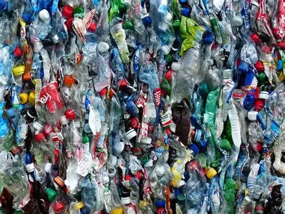
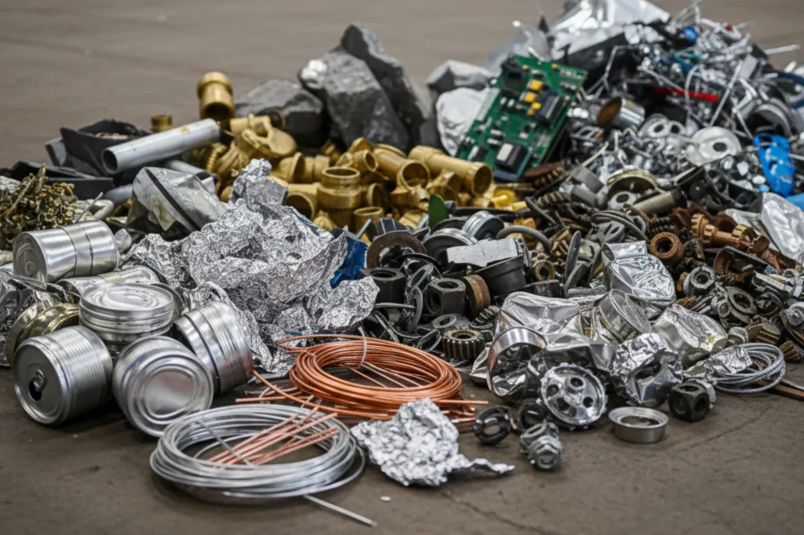
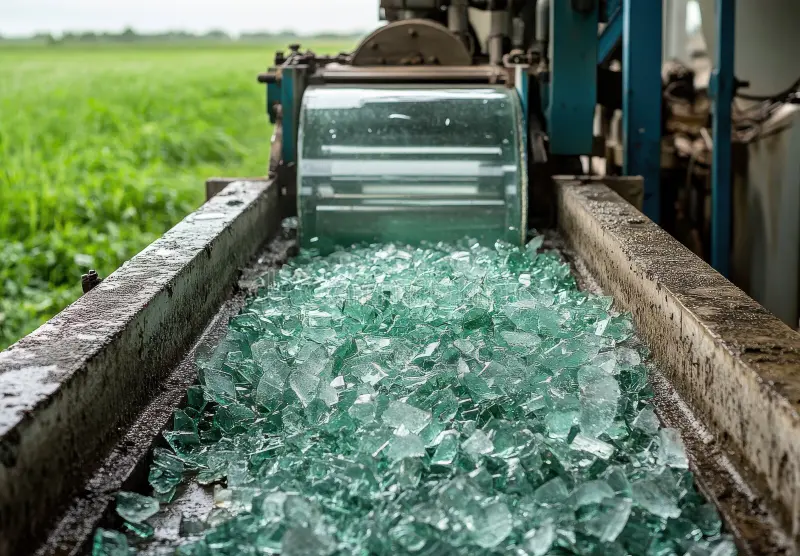
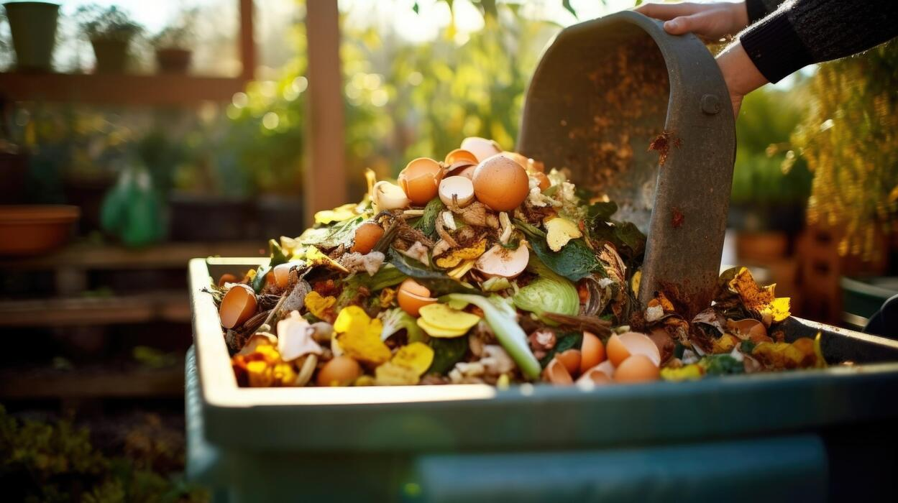

Tipos de Residuos
Papel y cartón
Los residuos de papel y cartón se clasifican en diferentes tipos según sus características y usos. Entre ellos se encuentra el papel blanco, que incluye hojas de oficina, documentos y fotocopias; el papel periódico, como diarios y revistas; el papel de escritura, que comprende cuadernos, libretas y sobres; el cartón corrugado, utilizado principalmente en cajas de embalaje y mudanzas; el cartón delgado, presente en cajas de cereales, zapatos y medicamentos; la cartulina, utilizada en tarjetas, carpetas y trabajos escolares; el papel kraft, empleado en bolsas y envolturas; y el papel de embalaje, utilizado para proteger y envolver productos.
También existen residuos de papel y cartón que no son reciclables comúnmente, como el papel higiénico usado, las servilletas sucias, el papel encerado, el papel carbón, los tickets térmicos y el cartón contaminado con grasa o restos de comida.

plastico
El plástico es uno de los residuos sólidos más comunes en nuestra vida cotidiana. Se encuentra en una gran cantidad de productos que utilizamos diariamente, como botellas, bolsas, envases, envolturas, juguetes, recipientes y empaques de alimentos. Este material se fabrica principalmente a partir de derivados del petróleo y del gas natural, por lo que se considera un residuo inorgánico. Una de sus principales características es que tarda mucho tiempo en degradarse de manera natural, lo que provoca que se acumule en el medio ambiente y genere problemas de contaminación.
Los residuos plasticos se clasifican en diferentes tipos según sus propiedades y comoposición, se encuentran gran cantidad de productos que uzamos diariamente, como botellas, bolsas, envases, envolturas, juguetes, recipientes y en empaques de alimentos este material suele fabricarse principalmente a partir de derivados del petroleo y del gas natural, por lo que se considera un residuo inorganico, algunas de sus principales caracteristicas es que tarda mucho pero mucho tiempo en degradarse de manera natural lo que provoca que se acumule en el medio ambiente y genere problemas de contaminación.

Metal
Los residuos metálicos incluyen latas, botes, herramientas y otros objetos hechos de metal,Los residuos metálicos se clasifican como residuos inorgánicos y muchos de ellos son reciclables, ya que pueden recuperarse, fundirse y transformarse en nuevos productos sin perder necesariamente sus propiedades principales, entre los metales más comunes que encontramos en la basura se encuentran el aluminio, el hierro, el acero, el cobre y el estaño
Para reducir la cantidad de residuos metálicos que contaminan el medio ambiente, es importante adoptar hábitos responsables, como separar las latas de aluminio y acero de otros residuos, llevar los metales a centros de reciclaje o de acopio, reutilizar objetos metálicos cuando todavía se encuentran en buenas condiciones y evitar abandonar piezas de metal en calles, terrenos baldíos o espacios naturales. También es recomendable manejar con cuidado los objetos oxidados o con bordes filosos para evitar accidentes.

Vidrio
Los residuos de vidrio se clasifican como residuos inorgánicos reciclables, ya que pueden recuperarse y transformarse en nuevos productos mediante un proceso de fundición.
El vidrio es un material muy durable y no se degrada con el tiempo, por lo que su reciclaje es fundamental para reducir la cantidad de los resiudos que se acumulan en el medio ambiente y disminuir la extracción de las materias primas necesarias para fabricar el vidrio nuevo.
Una de las características más importantes del vidrio es que puede permanecer en el medio ambiente durante miles de años sin degradarse completamente, esto significa que, cuando se desecha de manera incorrecta, puede acumularse en calles, terrenos, bosques, playas y otros espacios naturales, aunque el vidrio no libera fácilmente sustancias contaminantes durante su descomposición, su acumulación representa un problema ambiental, ya que ocupa espacio y puede afectar a los ecosistemas. Además, los fragmentos de vidrio roto pueden provocar cortes y heridas en personas y animales, por lo que es importante manipularlo y desecharlo con mucho cuidado.

Residuos Orgánicos
Los residuos orgánicos son aquellos que provienen de fuentes biológicas, como restos de comida, hojas secas, ramas, entre otros, estos residuos pueden ser aprovechados para crear compost o biogás, lo que contribuye a la reducción de la cantidad de desechos que llegan a los rellenos sanitarios.
Una de las principales características de los residuos orgánicos es que son biodegradables, lo que significa que pueden descomponerse naturalmente con el paso del tiempo y convertirse en sustancias más simples que regresan al suelo. Durante este proceso intervienen diferentes organismos que ayudan a transformar la materia orgánica en nutrientes. A diferencia de los residuos inorgánicos, como el plástico, el vidrio y muchos metales, los residuos orgánicos tienen un origen biológico y pueden aprovecharse para producir abono natural mediante procesos como el compostaje.

volver arriba